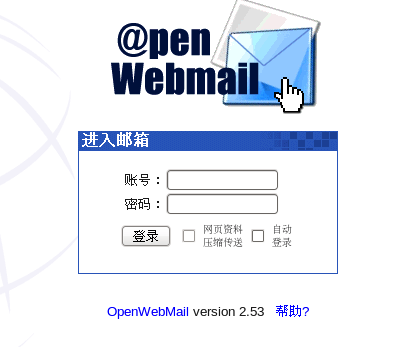
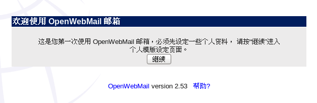

安装openwebmail
openwebmail提供了可视化的邮件管理系统，它运行在Apache环境下。
1、安装必备软件
|
[root@localhost
~]# yum install _y
perl-TextIconv perl-CGI perl-CPAN perl-suidper perl-YAML
|
2、在官网（http://openwebmail.org/openwebmail/download/release/）下载openwebmail，解压
|
[root@localhost
~]# tar _xvf
openwebmail-2-53.tar
|
3、解压后得到两个目录“cgi-bin”和“data”，而且这两个目录下都会包含一个“openwebmail”目录。其中cgi-bin是要执行的程序，而data是数据部分。因此在后面我们要改的地方都集中在cgi-bin目录下的openwebmail
1）将cgi-bin下的openwebmail移动到网页cgi默认目录下
|
[root@localhost ~]#
mv cgi-bin/openwebmail /var/www/cgi-bin/
|
2）将data复制到“/var/www”
|
[root@localhost ~]#
cp _r
data/ /var/www/
|
3）将data下的openwebmail移动到”/var/www/html/“
|
[root@localhost ~]#
mv data/openwebmail /var/www/html/
|
4、修改cgi-bin下的openwebmail权限
|
[root@localhost
~]# chmod _R 777
/var/www/cgi-bin/openwebmail/
|
5、修改suidperl的权限
|
[root@localhost
~]# chmod 4555 /usr/bin/suidperl
|
6、修改配置文件openwebmail.conf，改变参数ow_cgidir、ow_htmldir，它们一个是网页默认目录，一个是数据默认目录
|
[root@localhost
openwebmail]# gedit etc/openwebmail.conf
domainnames auto
auth_module auth_unix.pl
mailspooldir /var/mail
ow_cgidir /var/www/cgi-bin/openwebmail
//网页程序路径
ow_cgiurl /cgi-bin/openwebmail
ow_htmldir /var/www/data/openwebmail
//网页数据路径
ow_htmlurl /openwebmail
logfile /var/log/openwebmail.log
|
7、修改身份认证文件，这个文件需要从defaults目录拷贝，然后修改两个参数“passwdfile_enctypted“和”passwdmkdb“
|
[root@localhost openwebmail]# cp etc/defaults/auth_unix.conf etc/
[root@localhost
openwebmail]# gedit etc/auth_unix.conf
passwdfile_encrypted /etc/shadow
passwdmkdb none
|
8、修改dbm文件，首先从defaults目录下拷贝，然后改变参数“dbmopen_ext“和”dbmopen_haslock“
|
[root@localhost
openwebmail]# cp etc/defaults/dbm.conf etc/
dbm_ext .pag
dbmopen_ext none
dbmopen_haslock no
|
9、初始化openwebmail服务
|
[root@localhost
openwebmail]# ./openwebmail-tool.pl --init
creating db
/var/www/cgi-bin/openwebmail/etc/maps/b2g ...done.
...done.
Welcome to the
OpenWebMail!
Send the site
report?(Y/n) yes //这里必须输入yes
sending report...
Thank you.
|
10、重启Apache
|
[root@localhost
openwebmail]# service httpd restart
停止 httpd：
[确定]
正在启动 httpd：httpd:
Could not reliably determine the server's fully qualified domain name, using
localhost.localdomain for ServerName
[确定]
|
11、在浏览器输入“127.0.0.1/cgi-bin/openwebmail/openwebmail.pl“,可以看到下面的登录窗口

12、在登录窗口输入一个已经存在的用户名和密码，由于是第一次登录，我们需要做一些设置

13、设置个人模板

Copyright@david
zhytwj2018@163.com